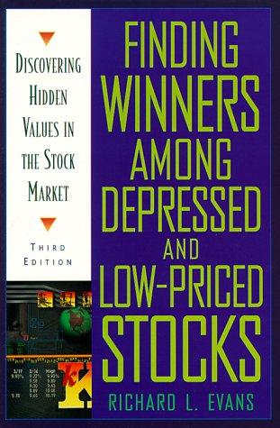

理查德·L.·埃文斯（Richard L. Evans）是一位注册投资顾问，专注于个人投资与退休账户管理，担任《文艺复兴报告：顶级反转候选股调查》（The Renaissance Report: A Survey of Prime Turnaround Candidates）的编辑与出版人，同时也是道氏理论（Dow Theory）的研究者与实践者，毕业于西北大学凯洛格管理学院。《在低价股中寻找赢家》（Finding Winners Among Depressed and Low-Priced Stocks）于1993年由麦格劳希尔出版，此后历经修订再版，是专门聚焦低价股与超跌股领域的少数系统性著作之一。
本书的基本主张是：最丰厚的投资回报往往来自被市场忽视、被机构投资者抛弃的低价股和超跌股。埃文斯认为，这一类股票之所以长期被误解，一方面是因为散户投资者将"低股价"与"低质量"画等号，另一方面是因为机构投资者受制于委托代理约束和资产规模，往往无法持有单价过低的股票，这两种偏见叠加在一起，在特定市场环境下形成了持续的定价错误。本书的核心工具是技术图表分析——通过识别超跌股的底部形态、成交量信号和支撑区域，在价格企稳回升之前提前布局。
全书分为三个部分。第一部分阐述低价投资策略的逻辑基础，解释为何这一领域长期被忽视，以及为何这种忽视本身就是超额回报的来源。第二部分是技术分析的实操核心，详细讲解如何在月线和周线图上识别长期底部形态，以及如何判断企稳信号与反弹机会。第三部分通过历史案例检验上述方法，从真实的赢家与输家中抽取规律。作为道氏理论的信奉者，埃文斯的分析框架建立在对价格趋势的尊重之上——他不试图预测短期涨跌，而是等待趋势本身提供足够清晰的信号。
投资情报（Investors Intelligence）编辑迈克尔·伯克（Michael Burke）评价此书："低价股投资是最有利可图、却最少被关注的投资领域之一。这本书提供了任何理性投资者都应该掌握的优质、常识性信息，是我读过的最佳投资书籍之一。"对于有意涉足反转投资（turnaround investing）或超跌股领域的读者，这本书提供了一套有别于主流价值投资叙事的视角：市场对负面信息的过度反应往往创造出真实机会，而捕捉这些机会需要的，不是复杂的财务模型，而是对价格行为与人类情绪周期的长期理解和耐心等待。